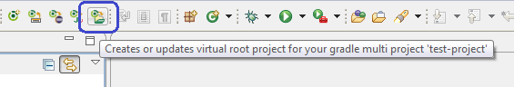

User guide
User guide
Virtual root project
About the concept
Inside a gradle root project you have got at least
- build.gradle
- gradle.properties
- settings.gradle
- sub projects
- maybe additional folders
- maybe additional files
So how can we work with root project content? We have got following
possibilities:
- Import the root project as an eclipse project and have
all resource duplicated in "Search", "Open Type", have wrong links to
parts not natured/parsed etc.(inconvenient + slow + problems)
- Do not import the root project as an eclipse project but open
content in external editors instead (inconvenient)
- Last but not least you can create a temporary project,
create linked files and linked folders to the parts you want to have
(very much of work)
I preferred the temporary project approach but I didn't like the
manual work to create links etc... So what about having this been done
automatically?
This is exact what the so called "Virtual root project" does: By
clicking a button inside the EGradle toolbar you are able to
(re-)create a "Virtual root project" of your current set gradle root
project. The virtual root project will contain all folders and files
of gradle root project folder being not already imported as an eclipse
project into current workspace.
Top
An example
There is a root project folder given called "test-rootproject". It's
content looks like shown in next image:
The both projects were already imported into eclipse workspace:

After clicking the red marked toolbar button the virtual root project
shows up. It contains NOT the both already imported projects but only
the missing stuff:
If you delete e.g. "testproject1" (without content delete!) and press
the toolbar button again, the "testproject1" sub folder will be shown
again inside the virtual root project.
Top
Adding new files or folders
When you add a new file or folder to the base folder of the
virtual root project - as shown in next image - the folder/file will
NOT be created to the virtual project but inside the original gradle
root project folder (this ensures you do not accidently add/commit something from virtual root project)
The virtual root project contains only a link to origin
file/folder. Inside the linked folders new created files/folders will be
simply created in link target and shown as normal files.e
Top
Removing files or folders
When you delete one of the linked files/folders in virtual root project, eclipse will warn
you that only the link will be deleted but origin still exists:
EGradle is aware of your delete attempt and will support you to delete the file in real root folder too.
A dialog ask you about the deletion:
Just press Yes button and the file is deleted
Top
How to update/refresh project
Normal refresh
Like a normal project, you can use F5 to refresh the project.
Full recreate
|  |
A simple click to the button does recreate it again from
scratch. At doing this current already opened/imported gradle
projects are recognized again. (If there occurs an errror on virtual root project creation - e.g. "cannot create link to ..." please simply press the button again. The problem is well known but currently not fixed) |
 |
If your team provider does not automatically connect the
project to your SCM you have to connect
it again.
|
Top
How to remove the virtual root project
Select the project and press DEL as you would do on any other project.
You can also check the 'delete content' check box.
Top
Changing the root project in
preferences
If the virtual root project is inside workspace it will be
automatically
re-created
Top
Version control (GIT)
Currently only GIT is supported.
GIT
When you call "Team - share Project..." on the virtual root project you
are able to
connect it with your GIT repository like any other eclipse
project
The GIT team provider decorations and the GIT staging is done
as usual. Normally the virtual root project should be automatically connected to your GIT repository when
it is created.
Top
Restrictions
The files
.gitignore and
.project are NOT from root folder but from virtual root project
itself! If you want to change /commit these two root folder files you
must do the changes outside eclipse.
Top